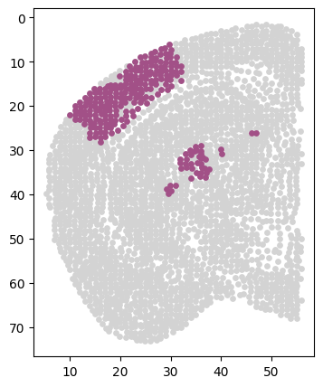

11_PLS_find_metagene
[1]:
import os
import scanpy as sc
import pandas as pd
import matplotlib.pyplot as plt
import seaborn as sns
from sklearn.preprocessing import StandardScaler
import matplotlib.colors as clr
color_self = clr.LinearSegmentedColormap.from_list('pink_green', ['#3AB370',"#EAE7CC","#FD1593"], N=256)
import matplotlib as mpl
mpl.rcParams['pdf.fonttype'] = 42
mpl.rcParams['ps.fonttype'] = 42
from sklearn.cross_decomposition import PLSRegression
import numpy as np
import warnings
warnings.filterwarnings("ignore")
[2]:
cluster_colors=['#4b6aa8','#3ca0cf','#c376a7','#ad98c3','#408444',
'#53738c','#a25087','#a78982','#a9c2cb','#92699e',
'#d69971','#df5734','#6c408e','#ac6894','#d4c2db',
'#537eb7','#83ab8e','#ece399','#405993','#cc7f73',
'#b95055','#d5bb72','#bc9a7f','#e0cfda','#d8a0c0',
'#e6b884','#b05545','#d69a55','#64a776','#cbdaa9',
'#efd2c9','#da6f6d','#ebb1a4','#a44e89','#8c564b',
'#b85292','#6d6fa0','#8d689d','#c8c7e1','#d25774',
'#c49abc','#a5a9b0','#927c9a','#9f8d89','#72567a',
'#63a3b8','#c4daec','#61bada','#b7deea','#e29eaf',
'#4490c4','#e6e2a3','#de8b36','#c4612f','#9a70a8',
'#76a2be','#cea5c7','#c6adb0','#9d3b62','#2d3462',
'#FF420E','#FFBB00']
[3]:
path = './results/mouse_1/2024_04_08_20_10_00GATE_2encoder_cat_feature_decoder_skip_connect_bn/'
adata = sc.read_h5ad(path + 'feature_add_weight1/Clusters_res0.75/adata_cluster_feature.h5ad')
allen_region = pd.read_csv('/mnt/Data16Tc/home/haichao/code/SpaCon/ST_NT_cluster/SpaCon_apply_zxw/data/mouse_1/allen_region.csv')
adata.obs['region'] = allen_region['region'].to_list()
adata
[3]:
AnnData object with n_obs × n_vars = 250535 × 1122
obs: 'x_section_mean', 'x', 'y', 'z', 'section', 'NT_index', 'Cells_id', 'clusters', 'region'
var: 'gene_identifier', 'name', 'mapped_ncbi_identifier'
uns: 'clusters_colors', 'log1p', 'louvain', 'neighbors', 'umap'
obsm: 'GATE_feature_add', 'GATE_feature_con', 'GATE_feature_spa', 'X_umap'
obsp: 'connectivities', 'distances'
[4]:
adata.obsm['spatial'] = adata.obs[['z', 'y']].values
PLS
th gene
[5]:
adata = adata[adata.obs['z'] < 56]
[126]:
cluster = '11'
sec = 'Zhuang-ABCA-1.093'
[127]:
th_regions = ['AD', 'AMd', 'AMv', 'AV', 'CL', 'CM', 'IAD', 'IAM', 'IGL', 'IMD', 'LD', 'LGv', 'LH', 'LP', 'MD', 'MGd', 'MGm', 'MGv', 'MH', 'PCN', 'PF', 'PIL', 'PO', 'POL',
'PP', 'PR', 'PT', 'PVT', 'PoT', 'RE', 'RH', 'RT', 'SGN', 'SMT', 'SPA', 'SPFm', 'SPFp', 'VAL', 'VM', 'VPL', 'VPLpc', 'VPM', 'VPMpc', 'Xi']
adata.obs['th_cluster'] = adata.obs['clusters'].astype(str)
adata.obs.loc[~(adata.obs['region'].isin(th_regions)), 'th_cluster'] = '-1'
# adata.obs
[128]:
# 2. Prepare data
X = adata.X.A # Gene expression matrix
y = adata.obs['th_cluster'].values # Category
# Convert the category label to a dual classification problem.
y_binary = np.where(y == cluster, 1, 0)
# 4. Create a PLS model
pls = PLSRegression(n_components=10)
pls.fit(X, y_binary)
# 5. Analytical results
coefficients = pls.coef_.flatten()
# coefficients = np.abs(pls.coef_.ravel())
gene_names = adata.var_names
th_gene_importance = pd.DataFrame({
'Gene': gene_names,
'Coefficient': coefficients,
'Importance': np.abs(coefficients)
})
[129]:
# The average value and standard deviation of the importance of calculation
importance_mean = th_gene_importance['Importance'].mean()
importance_std = th_gene_importance['Importance'].std()
# Selection importance is higher than the genetic gene
th_genes = th_gene_importance.sort_values(by='Importance', ascending=False).head(30)
# Sort by the importance of importance
th_genes = th_genes.sort_values('Importance', ascending=False)
# Only using the selected genes to re -calculate the weighted expression
X_selected = X[:, [list(gene_names).index(gene) for gene in th_genes['Gene']]]
coefficients_selected = th_genes['Coefficient'].values
weighted_expression = np.dot(X_selected, coefficients_selected)
# Add the weighted expression vector to the original data
scaler = StandardScaler()
adata.obs['th_Expression'] = scaler.fit_transform(weighted_expression.reshape(-1, 1))
# th_genes.to_csv(f'./th_ctx_cluster_gene/cluster{cluster}_th_gene.csv')
th_genes
[129]:
| Gene | Coefficient | Importance | |
|---|---|---|---|
| 566 | Gbx2 | 0.003416 | 0.003416 |
| 1002 | Tnnt1 | 0.002547 | 0.002547 |
| 316 | Rgs16 | 0.002258 | 0.002258 |
| 72 | Grid2ip | 0.002062 | 0.002062 |
| 318 | Cnih3 | -0.001923 | 0.001923 |
| 1079 | Abhd12b | -0.001762 | 0.001762 |
| 73 | Vipr2 | 0.001742 | 0.001742 |
| 1007 | Plekhd1 | 0.001628 | 0.001628 |
| 199 | Prkcd | 0.001527 | 0.001527 |
| 495 | Cbln1 | -0.001472 | 0.001472 |
| 699 | Tox | 0.001430 | 0.001430 |
| 720 | Pkp2 | 0.001408 | 0.001408 |
| 36 | Calb2 | 0.001397 | 0.001397 |
| 388 | Calb1 | 0.001376 | 0.001376 |
| 694 | Ramp3 | 0.001354 | 0.001354 |
| 1016 | Sp9 | 0.001315 | 0.001315 |
| 459 | Rab38 | 0.001273 | 0.001273 |
| 3 | Glra1 | -0.001234 | 0.001234 |
| 21 | Grik3 | 0.001228 | 0.001228 |
| 800 | Arsj | 0.001199 | 0.001199 |
| 922 | Nell1 | 0.001121 | 0.001121 |
| 220 | Endou | 0.001112 | 0.001112 |
| 252 | Galnt14 | -0.001100 | 0.001100 |
| 1084 | Tcerg1l | 0.001084 | 0.001084 |
| 727 | Adora1 | 0.001072 | 0.001072 |
| 414 | Ptpru | 0.001062 | 0.001062 |
| 676 | Ldb2 | 0.001031 | 0.001031 |
| 60 | Itih3 | 0.001020 | 0.001020 |
| 505 | Agt | 0.001004 | 0.001004 |
| 871 | Trhde | 0.000991 | 0.000991 |
[109]:
# sec = 'Zhuang-ABCA-1.089'
adata_s = adata[adata.obs['section'] == sec]
# fig, ax = plt.subplots(figsize=(4, 5))
# sc.pl.spatial(adata_s, color=['th_Expression'], spot_size=1, cmap=color_self, ax=ax)
df = pd.DataFrame({
'x': adata_s.obs['z'],
'y': adata_s.obs['y'],
# 'expression': adata_s[:, 'Zfhx4'].layers['adj_gene'].A.flatten() # Showping is a one -dimensional array
'expression': adata_s.obs['th_Expression']
})
# Create a scattered point picture
plt.figure(figsize=(4, 5)) # Adjust to the required image size
scatter_plot = sns.scatterplot(data=df, x='x', y='y', hue='expression', palette=color_self, s=20, legend=False)
plt.gca().invert_yaxis()
# scatter_plot.set_title('Gene Expression Spatial Plot')
[44]:
# Class_i = '34'
# section = 'Zhuang-ABCA-1.087'
cluster_i_section_i_adata = adata[(adata.obs['clusters'] == cluster) & (adata.obs['section'] == sec)]
cluster_i_section_i_adata = cluster_i_section_i_adata[cluster_i_section_i_adata.obs['z'] < 56]
back = adata[adata.obs['section'] == sec]
# back = back[back.obs['z'] < 56]
fig = plt.figure(figsize=(4, 5))
plt.scatter(back.obs['z'], back.obs['y'], s=10, c='#D3D3D3')
plt.scatter(cluster_i_section_i_adata.obs['z'], cluster_i_section_i_adata.obs['y'], s=10, c=cluster_colors[int(cluster)])
plt.gca().invert_yaxis()
ctx gene
[130]:
ctx_regions = ['ACAd', 'ACAv', 'AId', 'AIp', 'AIv', 'AUDd', 'AUDp', 'AUDpo',
'AUDv', 'ECT', 'FRP', 'GU', 'ILA', 'MOp', 'MOs', 'ORBl', 'ORBm',
'ORBvl', 'PERI', 'PL', 'RSPagl', 'RSPd', 'RSPv', 'SSp-bfd',
'SSp-ll', 'SSp-m', 'SSp-n', 'SSp-tr', 'SSp-ul', 'SSp-un', 'SSs',
'TEa', 'VISC', 'VISa', 'VISal', 'VISam', 'VISl', 'VISli', 'VISp',
'VISpl', 'VISpm', 'VISpor', 'VISrl']
adata.obs['ctx_cluster'] = adata.obs['clusters'].astype(str)
adata.obs.loc[~(adata.obs['region'].str.startswith(tuple(ctx_regions))), 'ctx_cluster'] = '-1'
# adata.obs
[131]:
# 2. Prepare data
X = adata.X.A # Gene expression matrix
y = adata.obs['ctx_cluster'].values # Category
# Convert the category label to a dual classification problem.
y_binary = np.where(y == cluster, 1, 0)
# 4. Create a PLS model
pls = PLSRegression(n_components=10)
# 5. Analytical results
coefficients = pls.coef_.flatten()
# coefficients = np.abs(pls.coef_.ravel())
gene_names = adata.var_names
ctx_gene_importance = pd.DataFrame({
'Gene': gene_names,
'Coefficient': coefficients,
'Importance': np.abs(coefficients)
})
[132]:
# The average value and standard deviation of calculation importance
importance_mean = ctx_gene_importance['Importance'].mean()
importance_std = ctx_gene_importance['Importance'].std()
# Set the threshold to the average value plus a standard deviation
# Selection importance is higher than the genetic gene
ctx_genes = ctx_gene_importance.sort_values(by='Importance', ascending=False).head(30)
# Sort by importance
ctx_genes = ctx_genes.sort_values('Importance', ascending=False)
# Use the selected genes to re -calculate the weighted expression
X_selected = X[:, [list(gene_names).index(gene) for gene in ctx_genes['Gene']]]
coefficients_selected = ctx_genes['Coefficient'].values
weighted_expression = np.dot(X_selected, coefficients_selected)
# Add the weighted expression vector to the original data
scaler = StandardScaler()
adata.obs['ctx_Expression'] = X_scaled = scaler.fit_transform(weighted_expression.reshape(-1, 1))
# ctx_genes.to_csv(f'./th_ctx_cluster_gene/cluster{cluster}_ctx_gene.csv')
ctx_genes
[132]:
| Gene | Coefficient | Importance | |
|---|---|---|---|
| 334 | Nr4a2 | 0.009431 | 0.009431 |
| 886 | Igfn1 | -0.007870 | 0.007870 |
| 1053 | Rprm | 0.006268 | 0.006268 |
| 929 | Synpr | 0.006225 | 0.006225 |
| 1015 | Gpr88 | 0.005867 | 0.005867 |
| 1040 | Kcng1 | -0.005755 | 0.005755 |
| 818 | Ankfn1 | 0.005611 | 0.005611 |
| 308 | Lypd1 | 0.005590 | 0.005590 |
| 385 | Adgrl2 | -0.005482 | 0.005482 |
| 63 | Tcap | 0.005284 | 0.005284 |
| 66 | Met | 0.005279 | 0.005279 |
| 673 | Cdh6 | 0.005004 | 0.005004 |
| 775 | Penk | -0.004897 | 0.004897 |
| 347 | Meis2 | -0.004787 | 0.004787 |
| 182 | Cartpt | 0.004753 | 0.004753 |
| 156 | Coch | 0.004689 | 0.004689 |
| 649 | Satb2 | 0.004687 | 0.004687 |
| 352 | Adam33 | -0.004262 | 0.004262 |
| 996 | Egfem1 | 0.004241 | 0.004241 |
| 626 | Ccn3 | 0.004161 | 0.004161 |
| 268 | Cbln2 | -0.004144 | 0.004144 |
| 761 | Zbtb7c | 0.004122 | 0.004122 |
| 261 | Grp | 0.004041 | 0.004041 |
| 942 | Lepr | 0.004033 | 0.004033 |
| 507 | Trpc6 | -0.004007 | 0.004007 |
| 840 | Efna5 | 0.003998 | 0.003998 |
| 280 | Bhlhe22 | 0.003956 | 0.003956 |
| 386 | Col24a1 | 0.003950 | 0.003950 |
| 292 | Oprk1 | 0.003938 | 0.003938 |
| 744 | Mdga1 | 0.003865 | 0.003865 |
[113]:
# sec = 'Zhuang-ABCA-1.089'
adata_s = adata[adata.obs['section'] == sec]
# fig, ax = plt.subplots(figsize=(4, 5))
# sc.pl.spatial(adata_s, color=['ctx_Expression'], spot_size=1, cmap=color_self, ax=ax)
df = pd.DataFrame({
'x': adata_s.obs['z'],
'y': adata_s.obs['y'],
# 'expression': adata_s[:, 'Zfhx4'].layers['adj_gene'].A.flatten()
'expression': adata_s.obs['ctx_Expression']
})
plt.figure(figsize=(4, 5))
scatter_plot = sns.scatterplot(data=df, x='x', y='y', hue='expression', palette=color_self, s=20, legend=False)
plt.gca().invert_yaxis()
# scatter_plot.set_title('Gene Expression Spatial Plot')
[204]:
# Class_i = '34'
# section = 'Zhuang-ABCA-1.087'
cluster_i_section_i_adata = adata[(adata.obs['clusters'] == cluster) & (adata.obs['section'] == sec)]
cluster_i_section_i_adata = cluster_i_section_i_adata[cluster_i_section_i_adata.obs['z'] < 56]
back = adata[adata.obs['section'] == sec]
back = back[back.obs['z'] < 56]
fig = plt.figure(figsize=(4, 5))
plt.scatter(back.obs['z'], back.obs['y'], s=15, c='#D3D3D3')
plt.scatter(cluster_i_section_i_adata.obs['z'], cluster_i_section_i_adata.obs['y'], s=15, c=cluster_colors[int(cluster)])
plt.gca().invert_yaxis()

[136]:
adata.obs['ctx_th_Expression'] = adata.obs['ctx_Expression'] + adata.obs['th_Expression']
adata_s = adata[adata.obs['section'] == sec]
df = pd.DataFrame({
'x': adata_s.obs['z'],
'y': adata_s.obs['y'],
'expression': adata_s[:, 'Trhde'].X.A.flatten()
# 'expression': adata_s[:, 'Zfhx4'].layers['adj_gene'].A.flatten()
# 'expression': adata_s.obs['ctx_th_Expression']
})
plt.figure(figsize=(4, 5))
scatter_plot = sns.scatterplot(data=df, x='x', y='y', hue='expression', palette=color_self, s=20, legend=False)
plt.gca().invert_yaxis()
[115]:
tmp_df = adata.obs[['ctx_th_Expression', 'clusters']]
tmp_df['plot'] = 'not in cluster'
tmp_df.loc[tmp_df['clusters'] == cluster, 'plot'] = 'in cluster'
means = tmp_df.groupby('plot')['ctx_th_Expression'].mean()
plt.figure(figsize=(6, 4))
sns.violinplot(data=tmp_df, x='plot', y='ctx_th_Expression',
palette=[cluster_colors[int(cluster)], '#d3d3d3'],order=['in cluster', 'not in cluster'])
plt.savefig(f'./th_ctx_cluster_gene/cluster{cluster}.pdf', format = 'pdf')
other regions
[117]:
cluster = '13'
sec = 'Zhuang-ABCA-1.099'
[118]:
# 2. Prepare data
X = adata.X.A # Gene expression matrix
y = adata.obs['clusters'].values # Category
# Convert the category label to a dual classification problem.
y_binary = np.where(y == cluster, 1, 0)
# 4. Create a PLS model
pls = PLSRegression(n_components=10)
pls.fit(X, y_binary)
coefficients = pls.coef_.flatten()
gene_names = adata.var_names
ctx_gene_importance = pd.DataFrame({
'Gene': gene_names,
'Coefficient': coefficients,
'Importance': np.abs(coefficients)
})
[119]:
# The average value and standard deviation of calculation importance
importance_mean = ctx_gene_importance['Importance'].mean()
importance_std = ctx_gene_importance['Importance'].std()
# Selection importance is higher than the genetic gene
ctx_genes = ctx_gene_importance.sort_values(by='Importance', ascending=False).head(30)
# Sort by importance
ctx_genes = ctx_genes.sort_values('Importance', ascending=False)
# Use the selected genes to re -calculate the weighted expression
X_selected = X[:, [list(gene_names).index(gene) for gene in ctx_genes['Gene']]]
coefficients_selected = ctx_genes['Coefficient'].values
weighted_expression = np.dot(X_selected, coefficients_selected)
# Add the weighted expression vector to the original data
scaler = StandardScaler()
adata.obs['other_Expression'] = X_scaled = scaler.fit_transform(weighted_expression.reshape(-1, 1))
len(ctx_genes)
[119]:
30
[120]:
# sec = 'Zhuang-ABCA-1.113'
adata_s = adata[adata.obs['section'] == sec]
# fig, ax = plt.subplots(figsize=(4, 5))
# sc.pl.spatial(adata_s, color=['other_Expression'], spot_size=1, cmap=color_self, ax=ax)
df = pd.DataFrame({
'x': adata_s.obs['z'],
'y': adata_s.obs['y'],
# 'expression': adata_s[:, 'Zfhx4'].layers['adj_gene'].A.flatten()
'expression': adata_s.obs['other_Expression']
})
# 创建散点图
plt.figure(figsize=(4, 5)) # 调整为所需的图像大小
scatter_plot = sns.scatterplot(data=df, x='x', y='y', hue='expression', palette=color_self, s=20, legend=False)
plt.gca().invert_yaxis()
# scatter_plot.set_title('Gene Expression Spatial Plot')
[127]:
# Class_i = '34'
# section = 'Zhuang-ABCA-1.087'
cluster_i_section_i_adata = adata[(adata.obs['clusters'] == cluster) & (adata.obs['section'] == sec)]
cluster_i_section_i_adata = cluster_i_section_i_adata[cluster_i_section_i_adata.obs['z'] < 56]
back = adata[adata.obs['section'] == sec]
back = back[back.obs['z'] < 56]
fig = plt.figure(figsize=(4, 5))
plt.scatter(back.obs['z'], back.obs['y'], s=10, c='#D3D3D3')
plt.scatter(cluster_i_section_i_adata.obs['z'], cluster_i_section_i_adata.obs['y'], s=10, c=cluster_colors[int(cluster)+13])
plt.gca().invert_yaxis()